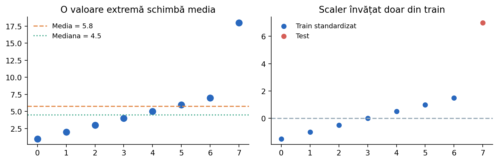

Procesarea datelor
În multe probleme ONIA, curățarea și organizarea datelor ocupă mai mult timp decât antrenarea modelului. Vom urmări un flux complet: inspectare, valori lipsă, duplicări, categorii, scalare, prevenirea scurgerilor de informații și export.
Un set de date este mai mult decât o matrice
Verificăm numărul de observații, tipurile datelor, valori lipsă, duplicate, categorii și distribuția țintei. Abia apoi alegem o schemă de transformare și un model.

import pandas as pd df = pd.DataFrame({ 'vârstă': [15, 16, None, 15], 'oraș': ['Iași', 'Cluj', 'Iași', 'Iași'], 'scor': [82, 91, 77, 82] }) print(df.info()) print(df.isna().sum()) print(df.select_dtypes(include='number').describe())
Citirea și validarea unui CSV
pandas.read_csv este comod; pentru control elementar asupra fiecărui rând poate fi folosit modulul standard csv.După citire, verifică numele coloanelor, tipurile, câteva exemple și delimitatorul. Dacă separatorul este ;, folosește sep=';'. Nu presupune că toate numerele sunt recunoscute automat corect.
import io import pandas as pd text = 'nume;scor\nAna;82\nDan;91\n' df = pd.read_csv(io.StringIO(text), sep=';') print(df.to_string(index=False))
Valorile lipsă: ce înseamnă și cum le tratăm?
Imputarea învățată pe toate datele înainte de train/test split produce leakage. În Python, SimpleImputer trebuie potrivit doar pe train, ideal în Pipeline.
import numpy as np from sklearn.impute import SimpleImputer X_train = np.array([[1., 7.], [2., np.nan], [3., 11.]]) X_test = np.array([[4., np.nan]]) imp = SimpleImputer(strategy='median') print(imp.fit_transform(X_train)) print(imp.transform(X_test))
Media versus mediana în prezența valorilor extreme
Mediana este robustă la valori extreme și e adesea o alegere potrivită pentru imputare; totuși, alegerea trebuie validată. În simulator poți schimba strategia și observa efectul asupra mediei și valorilor standardizate.
from statistics import mean, median v = [2, 3, 4, 5, 26] print(mean(v), median(v))
Duplicate și înregistrări incoerente
Înainte de drop_duplicates(), stabilește care coloane definesc unic o observație. Verifică și reguli de domeniu: vârstă negativă, valori imposibile, clase în afara vocabularului.
import pandas as pd df = pd.DataFrame({'id': [1, 1, 2], 'valoare': [4, 4, 8]}) print(df.duplicated().tolist()) print(df.drop_duplicates().to_string(index=False))
Detectarea valorilor extreme
IQR=Q3−Q1; observațiile în afara [Q1−1.5IQR, Q3+1.5IQR] sunt semnalate pentru investigație, nu automat greșite.În detectarea anomaliilor tocmai observațiile rare pot fi ținta modelului, deci eliminarea lor fără justificare poate distruge informație importantă.
import numpy as np v = np.array([3, 4, 4, 5, 6, 7, 29]) q1, q3 = np.percentile(v, [25, 75]) iqr = q3 - q1 marcate = (v < q1 - 1.5 * iqr) | (v > q3 + 1.5 * iqr) print('Q1 Q3:', q1, q3) print('Inspectăm:', v[marcate])
StandardScaler, MinMaxScaler și RobustScaler
Scalarea influențează mult metodele bazate pe distanță și coeficienți regularizați; arborii de decizie sunt de regulă puțin sensibili la scalarea monotonă a unei singure caracteristici numerice. Nu este o regulă universală pentru orice preprocesare sau orice model.
import numpy as np from sklearn.preprocessing import StandardScaler, MinMaxScaler, RobustScaler X = np.array([[1.], [2.], [3.], [20.]]) for cls in [StandardScaler, MinMaxScaler, RobustScaler]: print(cls.__name__, cls().fit_transform(X).ravel().round(2))
Pregătirea categoriilor și a textului
TfidfVectorizer; acesta învață vocabularul din train, nu din datele finale ascunse.În datele de concurs, o categorie nevăzută în train nu trebuie să oprească programul. De aceea, una dintre opțiuni este OneHotEncoder(handle_unknown='ignore').
from sklearn.feature_extraction.text import TfidfVectorizer texte_train = ['mere roșii', 'pere verzi', 'mere verzi'] texte_test = ['pere roșii'] vectorizer = TfidfVectorizer() X_train = vectorizer.fit_transform(texte_train) X_test = vectorizer.transform(texte_test) print(X_train.shape, X_test.shape)
Pipeline complet pentru un set mixt
ColumnTransformer, apoi aplicăm un model de clasificare. Astfel, la fit, preprocesarea învață doar din train; la predict, transformările se aplică și datelor noi cu aceiași parametri.Acest model de organizare este deosebit de util în proiecte și competiții deoarece reduce erorile cauzate de procesarea inconsecventă.
import pandas as pd from sklearn.compose import ColumnTransformer from sklearn.impute import SimpleImputer from sklearn.preprocessing import OneHotEncoder, StandardScaler from sklearn.pipeline import Pipeline from sklearn.linear_model import LogisticRegression X = pd.DataFrame({'vârstă':[15,16,17,16,15,18], 'oraș':['Iași','Cluj','Iași','București','Cluj','Iași']}) y = [0, 0, 1, 0, 1, 1] pre = ColumnTransformer([ ('num', Pipeline([('imp', SimpleImputer(strategy='median')), ('scale', StandardScaler())]), ['vârstă']), ('cat', OneHotEncoder(handle_unknown='ignore'), ['oraș']) ]) model = Pipeline([('pre', pre), ('clf', LogisticRegression(max_iter=1000))]) model.fit(X, y) print(model.predict(pd.DataFrame({'vârstă':[16], 'oraș':['Brașov']})))
Flux reproductibil: fișier → model → predicții
predict pe setul de concurs. Salvează doar rezultatele cerute, în ordinea rândurilor primite.Păstrează numele și ordinea coloanelor: o greșeală de ordine între train și test poate genera predicții invalide fără să apară neapărat o excepție.
import pandas as pd pred = pd.DataFrame({'id': [101, 102, 103], 'predictie': [0, 1, 0]}) pred.to_csv('submisie.csv', index=False, encoding='utf-8') print(pred.to_string(index=False))
Verificări finale înainte de evaluare
Un rezultat bun trebuie să poată fi repetat; dacă nu poți reproduce scorul de validare cu aceeași configurație, investigați sursa aleatorului sau o posibilă scurgere de informație.
import numpy as np p = np.array([0.3, 0.75, 0.51]) assert p.shape == (3,) assert np.isfinite(p).all() assert np.all((p >= 0) & (p <= 1)) print('Verificări de bază trecute')
De reținut pentru ONIA
Compară metodele în condiții corecte: același protocol de evaluare, date de validare separate și o metrică relevantă pentru problema rezolvată. Testul final nu trebuie folosit la alegerea hiperparametrilor.
Exemplele din această lecție sunt didactice; la competiție verifică întotdeauna enunțul, formatul datelor și metrica oficială.
Pentru detalii de implementare: Model evaluation — scikit-learn și Common pitfalls.